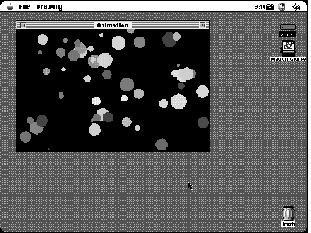
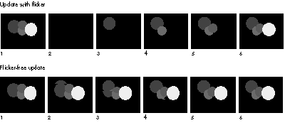

Does your QuickDraw GX application have a look reminiscent of the old silent movies?
If so, it suffers from flicker. But don't despair -- help is as near as this issue's CD,
where you'll find a ready-to-use library for doing memory-efficient, flicker-free
drawing inside a window. This article explores the problem of flicker and its solutions
and walks you through the code.
My first encounter with the idea of flicker-free drawing happened when I was a
12-year-old kid reading my father's copy of Nibble, a journal about programming the
Apple II. A review of new products mentioned a program that had impeccable animation
and guessed that the programmer was most likely using "page switching" to produce
flicker-free drawing. Page switching (or page flipping) took advantage of the fact that
the Apple II could use more than one location in memory (more than one page) to hold
the screen image. Given enough memory, a programmer could set things up so that
there was a second "offscreen" page to draw into while the first was being shown on the
screen. Switching back and forth between these two pages made flicker-free drawing
possible.
Today's hardware bears little resemblance to the Apple II, but the technique for doing
flicker-free drawing is essentially the same. It involves double buffering (also known
as screen buffering) -- causing all objects to be drawn first into an offscreen buffer
and then copying that entire buffer to the front buffer (the window). Both this and the
Apple II method eliminate the need to erase the old position of a moving image directly
on the screen before drawing its new position, which is the primary cause of flicker.
The library that accompanies this article manages an offscreen buffer for a QuickDraw
GX view port. Using it will enable you to give your QuickDraw GX application a more
professional feel by removing flicker. You could use the offscreen library provided
with QuickDraw GX to do screen buffering, but because it's a much more
general-purpose tool, you would have to handle most of the minutiae of examining
screen devices, filling out the bitmap data structures, and allocating and releasing the
memory yourself. The library provided on this issue's CD does all of that for you.
I'll walk you through the library code, illustrated by the sample application called
Flicker Free on the CD, but first I'll give some background on the problem of flicker
and its solutions. This article assumes that you already know a thing or two about
QuickDraw GX; if you don't, see the article "Getting Started With QuickDraw GX" in
develop Issue 15. The essential references areInside Macintosh: QuickDraw GX Objects
and Inside Macintosh: QuickDraw GX Graphics.
For a dramatic illustration of flicker, run the sample application Flicker Free (you'll
need a color Macintosh with QuickDraw GX installed). You'll see a window filled with
fifty circles bouncing around in different directions (see Figure 1).

Figure 1. The startup screen from the sample application Flicker Free
The Drawing menu in the Flicker Free application offers a choice of buffering methods:
full screen buffering, no screen buffering, and half and half. The program starts up in
half-and-half mode: the left side of the window (the side with the Apple menu, for
those like me who can't tell left from right) is being buffered, while the other side
isn't. Switch among the buffering choices to get a sense of the difference that flicker or
its absence makes in how you experience the animation.
What causes flicker? In our case, the shapes on the right are being erased and then
redrawn over and over again as they move across the screen. And although the
rendering of the shapes is very fast (your mileage may vary according to CPU speed),
the act of constantly drawing and erasing them makes the whole thing look like an old
silent movie. In places where circles overlap, pixels are made to take on different
colors as each shape is drawn. In the resulting blur of colors, it's hard to see which
shape is in front.
The key to avoiding flicker is to avoid erasing pixels on the screen needlessly between
two stages of a drawing and to change only the color of those pixels that need to change.
The left side of our sample application window is being double buffered, meaning that
each circle is drawn into an offscreen buffer and then the whole scene is transferred
onto the screen. Because at each step in the animation only the pixels that need to
change color do, the movement of the circles is rendered flicker free. With double
buffering there's no problem telling which circles are in front. Shapes move neatly
past each other.
Figure 2 shows two frame-by-frame drawing sequences illustrating the difference
between an update full of flicker and a flicker-free update.
The upper set of frames in Figure 2 shows what happens without double buffering. The
screen is erased (in frame 2 and then again, out of view, in frame 7) and then each
circle is added to the screen in its new position. The whole assembly of circles appears
on the screen only briefly before they're erased and the process is started again. The
lower set of frames in the figure shows the update process during double buffering.
The offscreen image is transferred to the screen in a sweep replacing the previous
image. You can see the sweep line as a very subtle horizontal break in the frame.

Figure 2. An update full of flicker vs. a flicker-free update
The sample application gives a dramatic demonstration of how flicker affects
animation. But even if your QuickDraw GX application isn't an animation package, it
probably suffers from some form of flicker when update events are serviced. The most
common and most annoying flicker occurs when applications engage in some form of
user interaction -- for example, dragging marquees, manipulating shapes, and editing
text.
When you're considering using screen buffering, it's important to understand the
tradeoff with drawing speed. In the sample application, the speed at which the circles
travel is a function of the number of circles in the window, the size of the window, and
your choice of screen buffering. Given the same window size and number of shapes,
drawing with screen buffering is always slower than with no screen buffering. Screen
buffering involves the same amount of work as screen drawing plus the additional step
of transferring the offscreen image onto the screen.
When the window contains one circle, the unbuffered performance is at least three
times faster than that of the buffered case (again, your mileage may vary depending on
your CPU speed). As more shapes are added, the performance in both cases goes down,
but so does the performance gap between the two: the unbuffered performance doesn't
have as much of an advantage over the buffered performance. This is because the speed
at which the offscreen buffer is transferred to the screen is independent of the
complexity of the shape it contains; it's purely a function of its size. As the complexity
of the shape being buffered increases, the relative cost of shape buffering decreases.
Now, this doesn't mean that you should buffer only complex shapes that take a long
time to draw. What it means is that when you add screen buffering to your application,
you have to be mindful of what constitutes a reasonable tradeoff between buffering and
drawing performance. You should try things out and see if screen buffering is the
technique best suited to your needs. Alternatives to screen buffering that enable
flicker-free drawing include the use of transfer modes and geometric operations. I
hope to discuss these in a future developarticle.
Meanwhile, we'll take a look at the screen buffering library that accompanies this
article, which is ready for you to incorporate into your QuickDraw GX application. I
wrote the library with performance issues in mind. Thus, it takes advantage of the fact
that in the QuickDraw GX graphics object model, information that's needed to render a
shape can be computed once, stored in a drawing cache, and reused every time that
shape is drawn. The library is very careful to check before making calls that
invalidate drawing caches, so the overhead of offscreen drawing is kept to a minimum.
Everything you need in order to use the screen buffering library is defined in the
interface file. The library consists of four major routines: the routine that creates the
view port buffer object, the one that disposes of it, the one that updates it, and the one
that uses it to actually buffer screen drawing. The four corresponding calls should
parallel the drawing loop inside your application.
The include file defines only one data type:
typedef struct viewPortBufferRecord **viewPortBuffer;
The internals of the data type are private to the "screen buffering.c" file and are as
follows:
struct viewPortBufferRecord {
gxViewGroup group; /* The offscreen's view group. */
gxViewDevice device; /* The offscreen's view device. */
gxViewPort view; /* The offscreen's view port. */
gxShape buffer; /* The bitmap of the offscreen's */
/* view device. */
gxBitmap bits; /* Source structure for the */
/* buffer shape. */
Handle storage; /* A temp handle to the bits of */
/* the bitmap. */
gxTransform offxform; /* This draws into the offscreen. */
gxTransform on_xform; /* This draws onscreen. */
gxShape eraser; /* Erases offscreen to background */
/* color. */
gxShape marker; /* Used to draw into the */
/* offscreen. */
gxShape updatearea; /* Represents the area to update. */
short usehalftone; /* True if screen has a halftone. */
WindowPtr window; /* The window of the view port. */
gxViewPort parent; /* The parent's view port. */
gxViewPort screenview; /* The view port to buffer. */
gxShape page; /* The shape that we're asked to */
/* draw. */
gxRectangle bounds; /* The offscreen's bounds. */
gxMapping invmap; /* The inv offscreen view port */
/* map. */
gxPoint viewdelta; /* The last delta for the */
/* offscreen. */
};
typedef struct viewPortBufferRecord viewPortBufferRecord;
You don't need to understand all of the fields in the viewPortBufferRecord data
structure to use the library. However, if you start having problems getting things to
work inside your application and find that you need to modify the screen buffering
library, see "The viewPortBufferRecord Data Structure" for some additional helpful
information.
______________________________
THE VIEWPORTBUFFERRECORD DATA STRUCTURE
The following is an accounting of all of the fields of the viewPortBufferRecord data
structure.
______________________________
In general terms, the code works by allocating a number of QuickDraw GX objects and
reusing them as required. Memory for the offscreen buffer is allocated from the
MultiFinder temporary memory heap (Temp Mem). Allocation of the storage block is
postponed until the last possible moment, and the block is kept locked and
nonpurgeable only during the drawing operation. That is, after the resulting image has
been transferred to the screen, the block is unlocked and marked purgeable but not
disposed of. This permits the same block to be reused in case the memory for the
buffer isn't purged.
While most users will keep their windows entirely within the bounds of one screen,
it's important to handle the case where a window spans more than one device. Each time
the DrawShapeBuffered routine is called (as described later), the code walks the
device list checking to see if the area that needs to be buffered intersects a given
screen. If it does, the code creates a buffer with the right settings and draws into that
device. The process is repeated for each screen.
CREATING AN OFFSCREEN BUFFER
You'll need one view port buffer for each window in your program. To create a view
port buffer, use the NewViewPortWBuffer routine.
viewPortBuffer NewViewPortWBuffer(WindowPtr window,
gxViewPort view, const gxColor *backgroundColor);
Look at the Initialize routine in the file "flicker free.c" for an example of how to use
NewViewPortWBuffer. Here's a description of the parameters:
window
The window that the buffering code should draw into.
view
The view port created by your application to draw into the given window. Note that this
is different from the object obtained by calling GXNewWindowViewPort, in that this
view port should have the window view port set to be its parent.
backgroundColor
A pointer to a gxColor data structure indicating which color should be drawn to erase
the offscreen buffer. Passing nil is equivalent to specifying white as the background
color.
Let's look at what it takes to create an offscreen buffer in the NewViewPortWBuffer
routine (Listing 1). In QuickDraw GX, the place where drawing occurs (for example,
the screen or an offscreen buffer) is described by a view device, so the primary
purpose of the routine is to create a view device and store it in the device field of the
viewPortBufferRecord data structure. Because we want the offscreen device that we
specify to be as close as possible to the one into which we will eventually be drawing,
you might think that we would go ahead and set all of the attributes of the view device
now. But in fact, all that we want to concern ourselves with right now is allocating the
gxViewDevice object. Later, when we get to the drawing part, we'll check the screen
and our offscreen device and update the gxViewDevice object accordingly.
Listing 1. NewViewPortWBuffer
viewPortBuffer NewViewPortWBuffer(WindowPtr window, gxViewPort view,
const gxColor *backgroundColor)
{
Handle sbHdl;
if (sbHdl = NewHandleClear(sizeof(viewPortBufferRecord))) {
gxInk background;
gxHalftone halftone;
viewPortBufferRecord *sbPtr;
HLock(sbHdl);
sbPtr = * (viewPortBufferRecord **) sbHdl;
sbPtr->window = window;
sbPtr->screenview = view;
sbPtr->parent = GXGetViewPortParent(view);
/* We don't allocate storage until we need it. */
sbPtr->storage = nil;
sbPtr->buffer = GXNewShape(gxBitmapType);
sbPtr->group = GXNewViewGroup();
sbPtr->view = GXNewViewPort(sbPtr->group);
sbPtr->device = GXNewViewDevice(sbPtr->group,
sbPtr->buffer);
if (sbPtr->usehalftone =
GXGetViewPortHalftone(view, &halftone))
GXSetViewPortHalftone(sbPtr->view, &halftone);
sbPtr->offxform = GXNewTransform();
GXSetTransformViewPorts(sbPtr->offxform, 1,
&sbPtr->view);
sbPtr->on_xform = GXNewTransform();
GXSetTransformViewPorts(sbPtr->on_xform, 1,
&sbPtr->parent);
background = GXNewInk();
if (backgroundColor)
GXSetInkColor(background, backgroundColor);
else {
gxColor backcolor;
backcolor.space = gxRGBSpace;
backcolor.profile = nil;
backcolor.element.rgb.red =
backcolor.element.rgb.green =
backcolor.element.rgb.blue = 0xFFFF;
GXSetInkColor(background, &backcolor);
}
sbPtr->eraser = GXNewShape(gxFullType);
GXSetShapeInk(sbPtr->eraser, background);
GXDisposeInk(background);
/* The initial bounds for the offscreen is the entire */
/* window. */
sbPtr->bounds.left = ff(window->portRect.left);
sbPtr->bounds.top = ff(window->portRect.top);
sbPtr->bounds.right = ff(window->portRect.right);
sbPtr->bounds.bottom = ff(window->portRect.bottom);
sbPtr->updatearea = GXNewRectangle(&sbPtr->bounds);
GXSetShapeViewPorts(sbPtr->updatearea, 1, &sbPtr->parent);
sbPtr->marker = GXNewShape(gxPictureType);
GXSetShapeTransform(sbPtr->eraser, sbPtr->offxform);
GXSetShapeTransform(sbPtr->marker, sbPtr->offxform);
GXSetShapeTransform(sbPtr->buffer, sbPtr->on_xform);
ResetMapping(&sbPtr->invmap);
/* The rest of the fields in the block are initialized to */
/* 0 by the "Clear" in the NewHandleClear used to allocate */
/* this block. */
HUnlock(sbHdl);
}
return ((viewPortBuffer) sbHdl);
}
To create a view device we need a view group and a bitmap. Eventually we'll want to fill
in all of the values of the gxBitmap object to match the screen, but for now the default
values assigned to the bitmap by calling GXNewShape are sufficient.
The NewViewPortWBuffer routine also allocates a number of auxiliary objects that
will be needed during the operation of the offscreen buffer. These include the following:
Because we'll use these objects throughout the life of the offscreen buffer, we'll do
best by allocating them now and releasing them at the end. Whenever possible, you'll
want to allocate objects that you'll use throughout the life of your application up front,
work with them by changing their attributes, and dispose of them at the end.
DISPOSING OF THE BUFFER
When you've finished using the window and want to deallocate the memory being used
by the view port buffer, you should call DisposeViewPortWBuffer.
void DisposeViewPortWBuffer(viewPortBuffer sb);
| sb | The object previously returned from NewViewPortWBuffer. |
As shown in Listing 2, DisposeViewPortWBuffer just runs through the
viewPortBufferRecord data structure and disposes of all of the objects allocated by
NewViewPortWBuffer.
Listing 2. DisposeViewPortWBuffer
void DisposeViewPortWBuffer(viewPortBuffer sb)
{
viewPortBufferRecord *sbPtr;
HLock((Handle) sb);
sbPtr = *sb;
/* We need to dispose of all of the things that we allocated. */
GXDisposeShape(sbPtr->marker);
GXDisposeShape(sbPtr->eraser);
GXDisposeTransform(sbPtr->on_xform);
GXDisposeTransform(sbPtr->offxform);
GXDisposeViewDevice(sbPtr->device);
GXDisposeViewPort(sbPtr->view);
GXDisposeViewGroup(sbPtr->group);
GXDisposeShape(sbPtr->buffer);
if (sbPtr->storage) DisposeHandle(sbPtr->storage);
HUnlock((Handle) sb);
DisposeHandle((Handle) sb);
}
UPDATING THE BUFFER
When some aspect of the window in which you're drawing changes, you need to call
UpdateViewPortWBuffer. In particular, if you change the clip shape or the mapping of
the viewPort object that you originally passed to NewViewPortWBuffer, you need to
call UpdateViewPortWBuffer. Typically, you'll need to change the clip shape of the
view port to keep QuickDraw GX from drawing shapes over the scroll bar area, and
you'll need to change the mapping in order to zoom in or scroll.
void UpdateViewPortWBuffer(viewPortBuffer sb, gxShape clip,
gxMapping *displaymap);
| sb | The object previously returned from NewViewPortWBuffer. |
| clip | The clip shape that should be applied when drawing into the |
| window previously passed to NewViewPortWBuffer. Passing | |
| nil leaves the current clip shape untouched. The initial | |
| setting is for drawing to occur in the entire contents of the | |
| window (including the area typically assigned to scroll bars). | |
| displaymap | The parameter used to update the view port buffer if you |
| change the mapping of your window view port in order to | |
| zoom in or scroll. If nil, the current mapping is left | |
| untouched. The initial setting is the identity mapping. |
DRAWING ON THE SCREEN
Now we get to the real substance of the library -- the buffering routine and its
supporting code.
When you want to draw on the screen, you'll call DrawShapeBuffered instead of
GXDrawShape. If the memory is available to double buffer your drawing,
DrawShapeBuffered will result in a flicker-free update; otherwise the routine will
simply call GXDrawShape.
void DrawShapeBuffered(viewPortBuffer sb, gxShape page,
const gxRectangle *updatebounds);
| sb | The object previously returned from NewViewPortWBuffer. |
| page | The shape that you want to draw inside the window. This is |
| typically a QuickDraw GX picture shape into which all of the | |
| shapes that make up a document have been collected. | |
| updatebounds | A pointer to a QuickDraw GX rectangle indicating what area of |
| the document is to be updated. The location of the rectangle is | |
| given in the coordinate system of the window's portRect. If | |
| nil, the code draws the area inside the clip shape passed to | |
| UpdateViewPortWBuffer. |
As shown in Listing 3, the first thing that the buffering routine does is to compute the
global bounds of the view port that's being buffered. Optionally, you could specify what
area inside the view port you want to have buffered. Otherwise the routine attempts to
draw all of the view port that's visible on the screen.
Listing 3. DrawShapeBuffered
void DrawShapeBuffered(viewPortBuffer sb, gxShape page,
const gxRectangle *updatebounds)
{
viewPortBufferRecord *sbPtr;
gxRectangle bounds;
HLock((Handle) sb);
sbPtr = *sb;
if (updatebounds) {
gxMapping map;
GXGetViewPortMapping(sbPtr->screenview, &map);
bounds = *updatebounds;
bounds.left = bounds.left & 0xFFFF0000;
bounds.right = (bounds.right + 0xFFFF) & 0xFFFF0000;
bounds.top = bounds.top & 0xFFFF0000;
bounds.bottom = (bounds.bottom + 0xFFFF) & 0xFFFF0000;
MapPoints(&map, 2, (gxPoint *) &bounds);
bounds.left = bounds.left & 0xFFFF0000;
bounds.right = (bounds.right + 0xFFFF) & 0xFFFF0000;
bounds.top = bounds.top & 0xFFFF0000;
bounds.bottom = (bounds.bottom + 0xFFFF) & 0xFFFF0000;
/* We remove the fractional part BEFORE the call to */
/* MapPoints because we're rounding to enclose all pixels */
/* intersected by the rectangle. Pixels are integers. */
/* Coordinates are fractional. */
}
else
bounds = sbPtr->bounds;
/* The above given bounds is in the window space - just right. */
GXSetRectangle(sbPtr->updatearea, &bounds);
/* Check to see that the shape is actually visible on the */
/* screen and then proceed to draw. */
if (bounds.left < bounds.right && bounds.top
< bounds.bottom) {
GDHandle screen;
if (sbPtr->page != page) {
GXSetPicture(sbPtr->marker, 1, &page, nil, nil, nil);
sbPtr->page = page;
}
if (screen = GetDeviceList()) {
do {
gxViewDevice device = GXGetGDeviceViewDevice(screen);
/* Note that we reuse the bounds in here. */
if (GXGetShapeDeviceBounds(sbPtr->updatearea,
sbPtr->parent, device, &bounds))
BufferDrawing(sbPtr, &bounds, device);
} while (screen = GetNextDevice(screen));
}
}
}
If you haven't caught on to the fact that you can connect multiple screens to your
Macintosh, the last part may be a little confusing. Once the routine has figured the
global bounds of the visible part of the view port that it's buffering, it walks the
device list checking to see if those bounds intersect each of the devices connected to the
CPU and then calls the routine that performs the drawing (BufferDrawing, shown in
Listing 4). Since most of the time a window will be completely contained within one
screen, the BufferDrawing routine will be called only once per invocation of
DrawShapeBuffered. The nice thing about breaking up the code this way is that the
BufferDrawing routine can assume that it's drawing to a single device and therefore
it's safe to make assumptions about the device's capabilities.
Listing 4. BufferDrawing
static void BufferDrawing(viewPortBufferRecord *sbPtr,
const gxRectangle *boundsPtr, gxViewDevice target)
{
gxRectangle bounds = *boundsPtr;
long depth, size, gxstatus;
gxMapping map, savemap;
gxShape devsh;
gxBitmap devbits;
OSErr status;
gxPoint viewloc;
gxBitmap oldbits = sbPtr->bits;
/* Fill in all the values of sbPtr->bits. */
...
viewloc.x = bounds.left; /* These numbers are already in */
viewloc.y = bounds.top; /* local space. */
/* Compute the onscreen location of the buffer. */
...
/* This is the important part, allocating the actual bits. */
size = sbPtr->bits.rowBytes * sbPtr->bits.height;
check(size > 0);
if (sbPtr->storage) {
if ((* (sbPtr->storage)) != nil)
SetHandleSize(sbPtr->storage, size);
else {
ReallocHandle(sbPtr->storage, size);
nrequire(status = MemError(), TempBufferFailed);
}
}
else
require(sbPtr->storage = TempNewHandle(size, &status),
TempBufferFailed);
HNoPurge(sbPtr->storage);
HLock(sbPtr->storage);
sbPtr->bits.image = * ((void **) sbPtr->storage);
/* See if we need to invalidate all of the world when we do */
/* this. */
if (oldbits.image != sbPtr->bits.image ||
oldbits.width != sbPtr->bits.width ||
oldbits.height != sbPtr->bits.height ||
oldbits.rowBytes != sbPtr->bits.rowBytes ||
oldbits.pixelSize != sbPtr->bits.pixelSize ||
oldbits.space != sbPtr->bits.space ||
(oldbits.set != sbPtr->bits.set && oldbits.set &&
GXEqualColorSet(oldbits.set, sbPtr->bits.set) == false) ||
(oldbits.profile != sbPtr->bits.profile &&
oldbits.profile &&
GXEqualColorProfile(oldbits.profile, sbPtr->bits.profile)
== false)) {
GXSetBitmap(sbPtr->buffer, &sbPtr->bits, nil);
GXSetViewDeviceBitmap(sbPtr->device, sbPtr->buffer);
}
else { /* We test this one instead */
sbPtr->bits.set = oldbits.set; /* of the disposed one. */
sbPtr->bits.profile = oldbits.profile; /* Ditto */
}
/* Erase the offscreen bitmap, draw the shape into it, and */
/* then copy it onscreen. */
GXDrawShape(sbPtr->eraser); /* Erase. */
GXDrawShape(sbPtr->marker); /* Buffer. */
GXDrawShape(sbPtr->buffer); /* Transfer -- done. */
HUnlock(sbPtr->storage);
HPurge(sbPtr->storage);
if (devsh)
GXDisposeShape(devsh); /* Dispose of the device bitmap. */
GXGetGraphicsError(&gxstatus);
ncheck(gxstatus);
if (gxstatus)
goto DrawingFailed;
return;
TempBufferFailed:
GXDisposeShape(devsh); /* Dispose of the device bitmap. */
DrawingFailed:
GXDrawShape(sbPtr->updatearea);
GXDrawShape(sbPtr->page);
}
This approach of walking the device list is preferred to maintaining a buffer for each
screen and having a routine to update the buffer list every time a window is moved. The
latter approach would result in only minor performance improvements, and only when
the window intersected more than one device. Since this is a rare case, the additional
housekeeping isn't worth the trouble.
The key to understanding DrawShapeBuffered is the equivalence between the
QuickDraw data type GDHandle and a QuickDraw GX view device. To walk the device list,
the code uses the QuickDraw routines GetDeviceList and GetNextDevice. The
GXGetShapeDeviceBounds routine converts a GDHandle to a view device. From the view
device we can find out which area of the screen intersects the area that we're being
asked to update.
The Display Manager can help you walk the device list, as discussed in
the Graphical Truffles column in this issue of develop.*
In BufferDrawing, all of the parameters needed to create an offscreen bitmap as
required by the given device are finally computed. Note that in the BufferDrawing
routine there are no calls that create new objects; there are only calls that modify
objects that were created when NewViewPortWBuffer was called. The modifications are
done only if needed. For example, before calling GXSetTransformMapping, the library
checks to see if the mapping has changed and merits updating. Without this check, the
transform cache would be needlessly invalidated some of the time. Similarly, the code
checks to see if any of the parameters of the bitmap for the offscreen view device have
changed before calling GXSetBitmap and GXSetViewDeviceBitmap.
Changing the bitmap for the view device is one of the most expensive operations in
QuickDraw GX because it invalidates most of the drawing caches. Fortunately, the check
to see if the bitmap needs to be updated executes very quickly in spite of its length, and
the cost of rebuilding all of the shape caches is avoided if possible.
The most confusing thing in the BufferDrawing routine is the call to the
GXGetDeviceBitmap routine (omitted from Listing 4; see the full code on the CD for
details) and the subsequent call to GXDisposeShape for the same object. This routine
obtains a copy of the read-only object in QuickDraw GX that represents the bitmap for
a given screen. There are two important points about this. The first is that since we're
being given a copy and not the object itself, we have to dispose of the object after we're
finished with it. You may think that it would be more efficient to get the object during
the initialization routine and then dispose of it when we're all done. But that's the
other important point. Since the object that we have is a copy of the original, our copy
would not be updated if the depth of the monitor was changed or the color table for the
device had been updated. As a result of these two points, we're forced to allocate an
object every time through our drawing loop, something that should be avoided in
general.
THE REST OF THE ROUTINES
The rest of the routines in the offscreen buffering library provide support and access
to some of the internal fields of the viewPortBufferRecord data structure. If you need
more information on how to use these, look at the sample code included on this issue's
CD.
I'll mention one other routine here. Because the internal view port created by the
library is inaccessible from the outside, the routine SetViewPortWBufferDither is
provided to change the dither level of the view port. If you need to change other
attributes of the offscreen view port, use the SetViewPortWBufferDither routine as a
template.
void SetViewPortWBufferDither(viewPortBuffer sb,
const long ditherlevel);
| sb | The object previously returned from NewViewPortWBuffer. |
| ditherlevel | The dithering level to set the offscreen view port to. |
If the code presented so far doesn't meet your particular needs, you may want to try
changing or fine tuning it. Here are some suggestions and observations about things
that you may want to try.
BITMAP ALLOCATION
Currently the code looks for memory in the MultiFinder temporary memory heap
(Temp Mem) and will back down in case it can't obtain the memory for the offscreen
buffer. If you need to guarantee that your drawing will be screen buffered, you'll need
to change the memory allocation code inside the BufferDrawing routine.
INTEGRATED ERROR HANDLING
There are two places where memory allocation can trip the screen buffering library.
If the library fails to allocate enough memory to hold its data structures, it will
return nil from NewViewPortWBuffer. You may need to change this to better fit in
with your application's error model.
The library will handle a failure to allocate the offscreen bitmap by resorting to
drawing with GXDrawShape. If you want something different, see "Bitmap Allocation"
above.
DEEP POCKETS
If the original data that you'll be working with requires more bits than are on the
display that you're running on, you may want to create an offscreen buffer that's
deeper than the screen and then take advantage of the dithering or halftoning
mechanisms in QuickDraw GX to allow user manipulation. The code that checks for
changes in the screen view port's halftone should give you a good idea of how to do that.
Now you understand how to use double buffering to prevent flicker in your QuickDraw
GX application. You may need to do some fine tuning of the screen buffering library to
fit your purposes, but the result will be worth it. Users will appreciate the more
professional look of your application and their eyes won't tire as quickly as they peer
at a flicker-free screen.
RELATED READING
HUGO M. AYALA (hugo@mit.edu, http://web.mit.edu/hugo/www) spent five
years working on QuickDraw GX as a development engineer at Apple before
returning to MIT to pursue a Ph.D. in mechanical engineering. His current
research interest is how to design the undercarriage of large earth-moving
equipment so that it doesn't get thrashed so fast by rocks and dirt. To pay for
the Ph.D., he moonlights doing computer graphics work, which has been his
hobby since he was a lad. After finishing his Ph.D., Hugo plans to branch off
into drawing comic strips, like the one that he's been drawing for his school
newspaper. If you ever try to give Hugo directions, you need to know that he's
directionally challenged -- he really can't tell his left from his right.*
Thanks to our technical reviewers Dave Bice, Brian Chrisman, Tom Dowdy,
David Hayward, and Ingrid Kelly.*